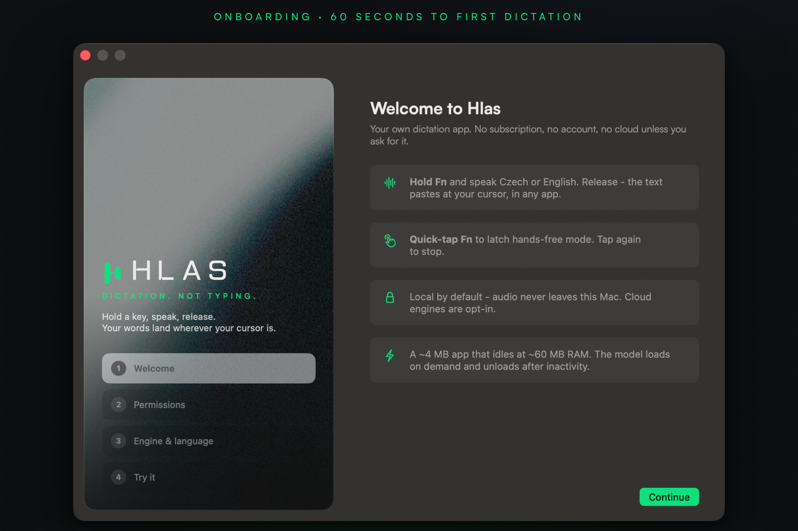
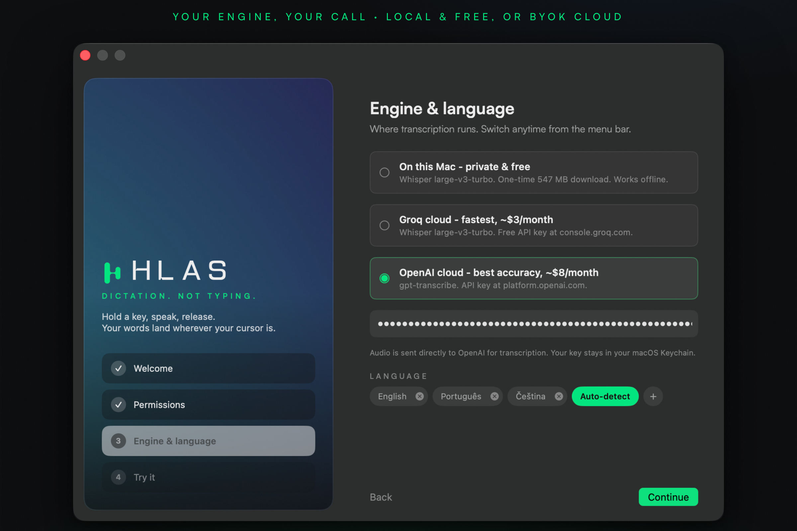
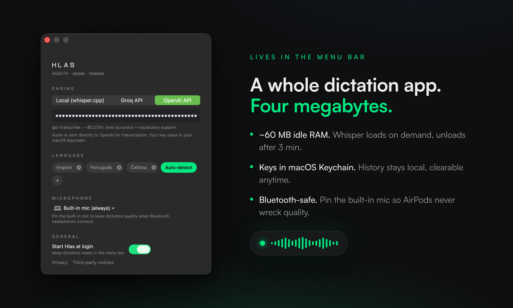

Hold Fn · speak Czech or English · release — text lands at your cursor, in any app. No subscription, no account, no cloud unless you ask for it.
A small pill appears at the bottom of your screen. The mic is live — speak Czech, English, or both.
Whisper large-v3 transcribes — locally on Metal, or via Groq/OpenAI if you brought a key.
Pasted into whatever app has focus. Quick-tap Fn instead to latch hands-free mode.



whisper.cpp large-v3-turbo runs on your Mac's GPU. Audio never leaves the machine. Works offline.
Bring your own Groq key (~$1–3/mo at heavy use) or OpenAI key for best accuracy. Keys live in macOS Keychain.
Built in Prague because every dictation app treats Czech as an afterthought. Whisper large-v3 class quality, priming prompts for cs/sk/en.
~4 MB app, ~60 MB idle RAM. The model loads on demand and unloads after 3 minutes of silence.
Add names and jargon in Settings → Vocabulary — the model learns how to spell them.
Every transcript saved locally, searchable from the menu bar, clearable anytime. Never uploaded.
Built as a personal replacement for the $8–15/month dictation apps.
| Hlas | Superwhisper | Wispr Flow | Willow | |
|---|---|---|---|---|
| Price | free · ~$3/mo API | $8.49/mo | $15/mo | $15/mo |
| Local & private | yes | yes | no — cloud | partial |
| Czech quality | Whisper large-v3 | good | uncontrollable | weak |
| App size | ~4 MB | 1 GB+ | heavy | heavy |
| Idle RAM | ~60 MB | ~800 MB | heavy | ? |
| Account required | no | yes | yes | yes |
2.6 MB disk image. Apple Silicon Mac on macOS 15 or later.
Open the DMG and drag Hlas onto the Applications folder.
macOS will block the first launch. Open System Settings → Privacy & Security, scroll down, click Open Anyway.
Microphone to hear you, Accessibility for the Fn hotkey and the paste.
That's it. Hlas lives in the menu bar, not the Dock.
Hlas isn't notarized by Apple — notarization requires a paid Apple Developer Program membership. The app is signed with a stable developer certificate (so your permissions survive updates) and every line of source is public in this repo. If you'd rather not click through the warning, build it yourself in two minutes.
Terminal shortcut, if you prefer it to the Settings pane:
xattr -dr com.apple.quarantine /Applications/Hlas.app
Requires an Apple Silicon Mac on macOS 15+, Xcode, and brew install xcodegen.
# clone git clone https://github.com/GedeonDrapak/hlas && cd hlas # build whisper.cpp static libs (once) make vendor # build, install to /Applications, launch make install
First run asks for Microphone + Accessibility — that's the Fn hotkey and the paste. Full policy in PRIVACY.md.